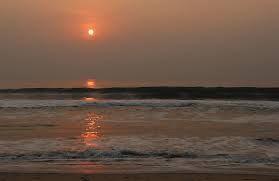

MADRAS
Chennai formerly known as Madras is the capital city of the Indian state of Tamil Nadu.
This metropolis is often called the cultural capital of India for its deep-rooted traditions
and long heritage.
The city is the gateway to the rest of South India. It has the 2nd longest seashore in the world, located on the
Coromandel Coast of the Bay of Bengal.
With a population of around six million, it is Indias fourth largest city.
The city was established in the 17th century by the British, who developed it into a major urban centre
and naval base.
By the 20th century, it had become an important administrative centre, as the capital of the Madras Presidency.
From before days of Independence to present, the
people of Chennai have played an important role in shaping the
countrys political destiny.
Chennai's economy has a broad industrial base in the automobile, technology,
hardware manufacturing, and healthcare industries.
The city is India's second largest exporter of software, information technology (IT) and IT-enabled services (ITeS).
A major
chunk of India's automobile manufacturing industry is based in and around the city. Chennai accounts for 60 percent
of the country's automotive exports and is referred to as the
Detroit of South Asia.
Chennai hosts a large cultural event, the annual Madras Music Season, which includes performances by hundreds of artists.
The city has a vibrant theatre
scene and is an important centre for the Bharatanatyam, a classical dance form.
The Tamil film industry, known as Kollywood, the second largest movie industry in India,
is based in the city.

Parthasarathy Temple
Parthasarathy temple in Triplicane was built by the Pallava kings of South India in around 8th century and later renovated by the Vljaya nagar Kings in the 16th century.It is one of the major tourist attractions of Chennai.
Santhome Cathedral
An important pilgrimage center of Christians, visiting chennai the Santhome Cathedral is at the site of the tomb of Apostle St. Thomas who came to India from the Palestines.
Marina Beach
The famous Marina Beach, the Pride of Chennai, is second longest beach in the world and has a wide sandy foreshore. One can see statues of heroes from Tamil culture to Samadhiof great leaders like Anna and MGR here. Walk along the Marina in the evening to cool off and eat crispy sundal and murukku. An aquarium is also located on the Marina Beach.
Watching sunset and sunrise from the beach is a fascinating experience.
FOODS
The non-veg meals that most people like include Chettinad chicken / mutton soup, chappati, plain biryani, Chicken 65,
Chettinad chicken, mutton gravy, fish gravy, veg kootu,
keerai kootu, poriyal, rasam, curd and rice.
Biriyani is a
hugely popular food in Chennai.It is a mixed rice food with meat. Variants include Chicken Biriyani, Mutton Biriyani,
Egg Biriyani, Vegetarian Biryani, Beef Biriyani
etc. Biryani is popular amongst Muslims, and so there is a theory that the
Mughals brought it with them.Kushkas are Biriyanis without meat or meat removed from rice. Biryani is
usually served with
sour brinjal gravy (Baghara baingan) and chilled raita.
Idly - The Best Street Food in Chennai
Being the staple food of Tamil Nadu, Idli is readily available on almost every street corner. It is made from rice and is usually served with sambar and coconut chutney.Murugan Idly Shop is a popular joint in Chennai which serves their idlis with a wide variety of chutneys. Although the process of making these is quite easy, however, not everyone
can get them to be fluffy and as light as air.